Eater Charge Threshold
Product Design · Uber Eats · 2019
Product Design · Uber Eats · 2019
I work on the Restaurant team at Uber Eats, responsible for all projects related to menus. For this project, I led the design, working closely with a PM, Content Strategist, designers on the Eater team in San Francisco, and engineers.
Charge threshold allows restaurants to charge or refund eaters based on the customization choices they make when ordering. We had previously built charge thresholds at the modifier option level — for example, the default recipe comes with 3 slices of tomato, and you're charged extra if you go over 5. This project extends that to the modifier group level: when you go over a "Choose Your Toppings" threshold, you're charged extra based on the total count, not per-option.
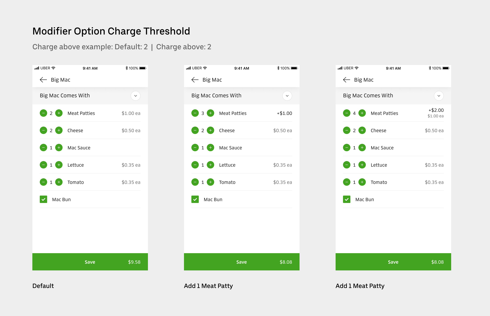
Charge threshold at the modifier option levelSupporting group-level charge thresholds had been descoped from an earlier project due to attribution complexity: when an eater exceeds the threshold, it's difficult to determine which option contributed to the extra charge, especially when options are priced differently. To move forward, we negotiated with the enterprise client to restrict the feature to modifier groups where all options share the same price — sufficient for their current needs and fast enough to bring their menus online.
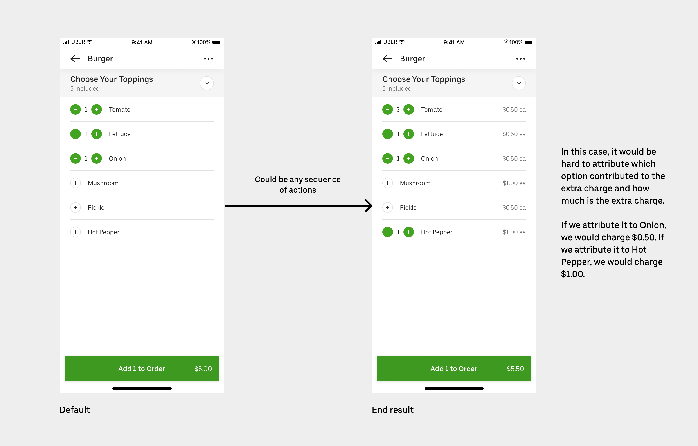
Attribution complexity at the modifier group levelSeveral strategic partners required this feature before they could bring their menus onto the platform. It also expanded our library of complex menu structures, making Uber Eats viable for restaurants with sophisticated customizations — salad bars, poke places, and similar formats.
I took a mobile-first approach, as we have a web framework that translates mobile designs to web automatically. My first instinct was a summary bar to display the extra charge or refund as eaters made selections.
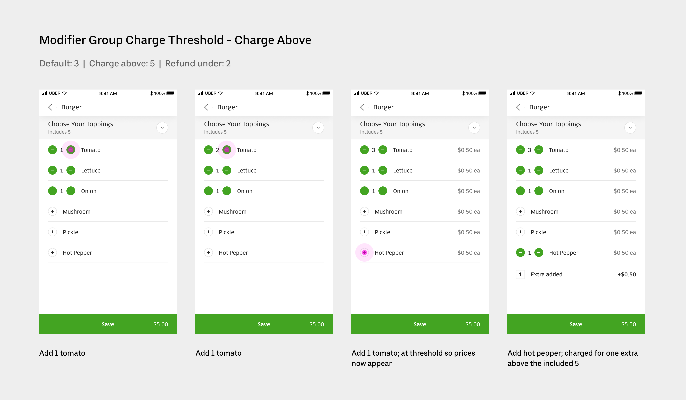
Initial exploration: summary barAfter design reviews with the Eater team, we identified two problems with the summary bar: it risked being confused with another menu item, and it felt disconnected from the rule ("includes 5") that triggers the charge. I iterated with the Content Strategist on tying the rule and the charge/refund summary together visually. We stress-tested across different rule combinations and localization scenarios before landing on the final treatment.
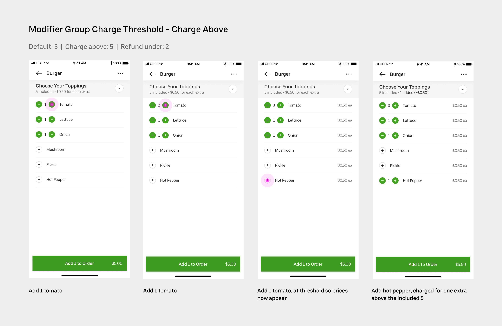
Final design — charge state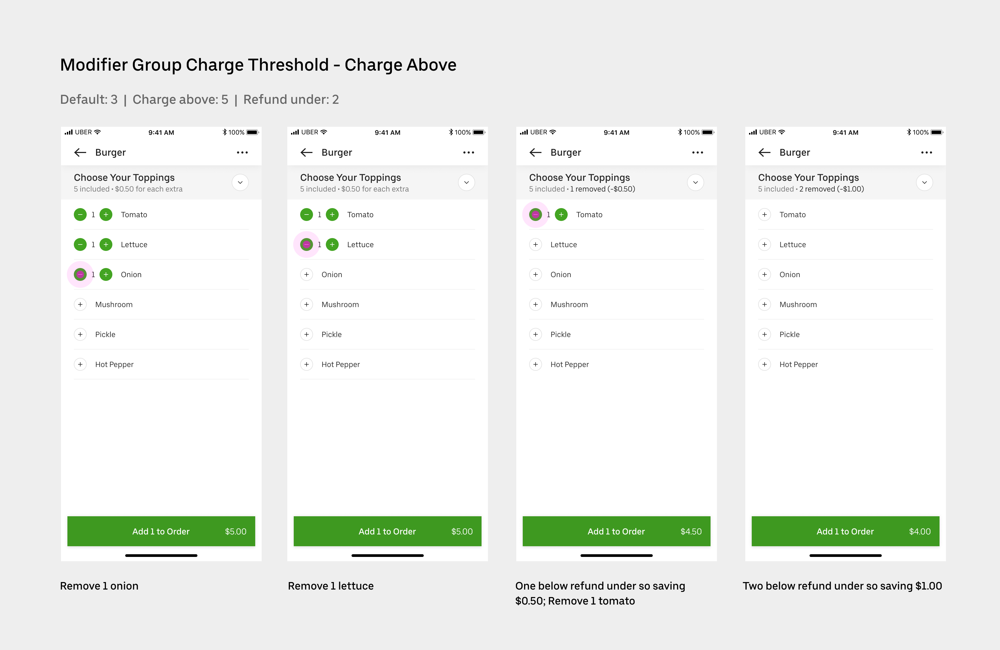
Final design — refund state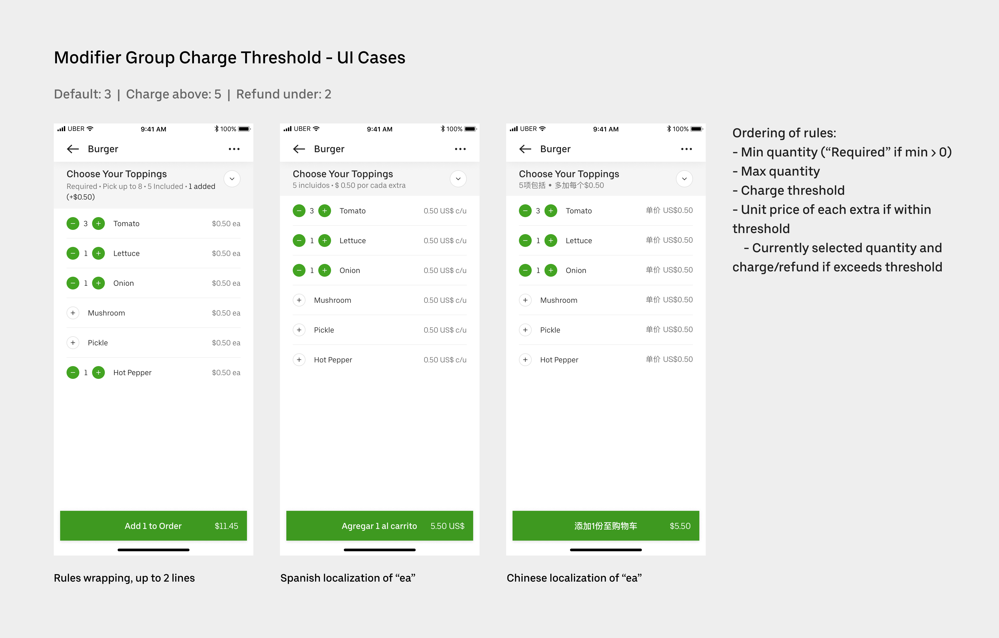
Edge case coverageOn the checkout page, eaters need to review their full order before confirming payment. Adding group-level charge thresholds required modifying the order summary to include modifier group headers and attribute price changes at the group level. I used this as an opportunity to clean up the existing order summary, which had become difficult to scan with complex orders.
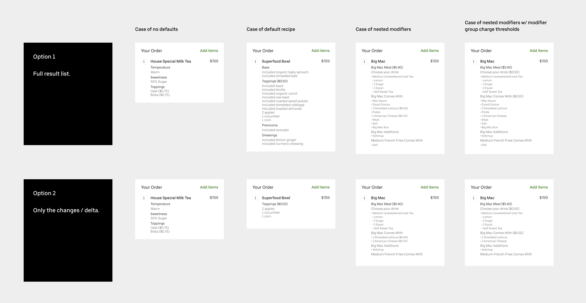
Two approaches to the order summaryI evaluated two approaches: showing the full result list (every item including defaults) versus showing only the delta (what the eater changed). After competitor analysis, the delta approach was clearly preferable — cleaner, more scannable, and consistent with how other apps handle it. I then worked with the Content Strategist to map out all the semantic variations across different selector types (radio buttons, checkboxes, incrementors) to find a solution that was consistent, accurate, and localizable.
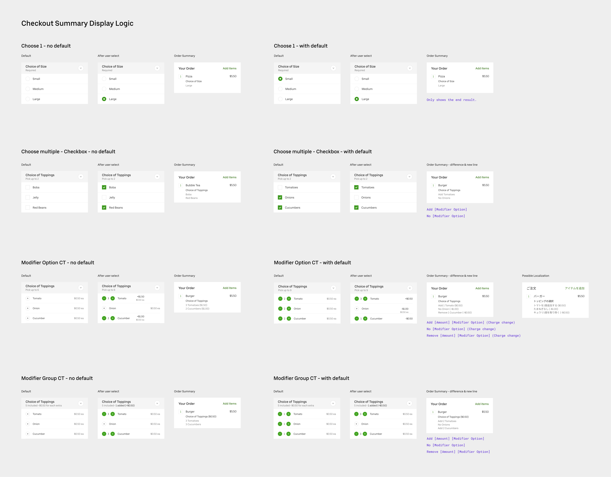
Selector semantics and content logicDuring engineering, a new constraint emerged: nested modifiers can be up to 6 levels deep, making a fully hierarchical UI difficult to build at scale. I proposed flattening the nesting structure in the order summary — it doesn't reduce clarity and is significantly easier to build and maintain.
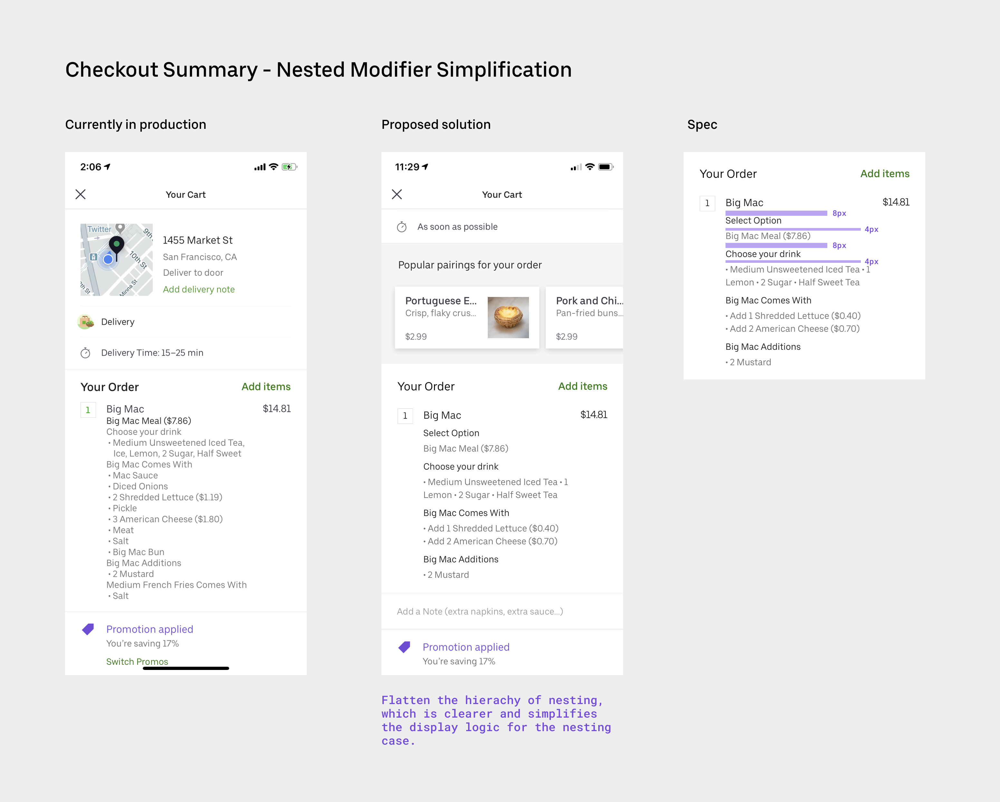
Flattening nested modifier structureOnce the mobile experience was finalized, translating it to web was straightforward. I worked with the web Eats designer to ensure the designs conformed to her framework.
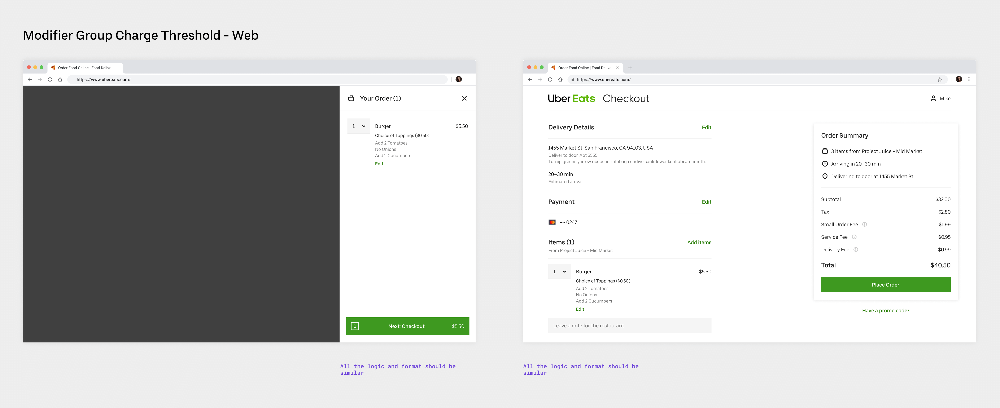
Web experienceThe feature touched many other surfaces beyond the ordering flow: in-app and email receipts, Restaurant Dashboard (the tablet app restaurant staff use to process orders), and Restaurant Manager (where owners review order history and payouts). For each surface I examined the specific user need and made changes accordingly. On Restaurant Dashboard, for example, it was important for kitchen staff to see the full ingredient list rather than relying on memory for the default recipe.
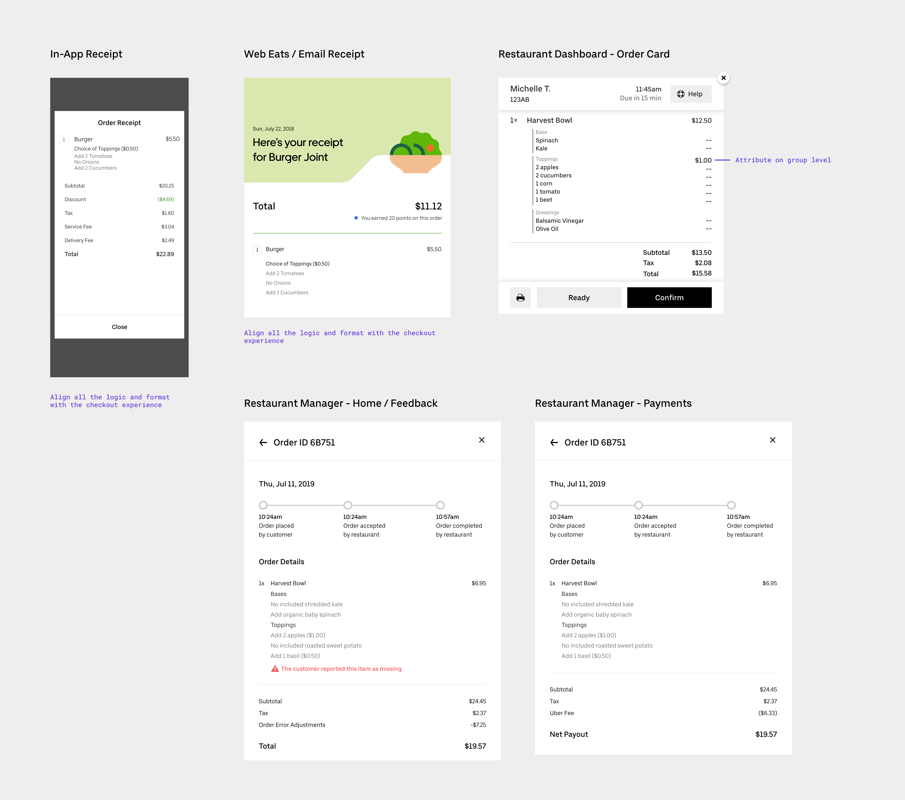
Receipts and restaurant-facing surfacesThe project shipped and is live. It unblocked several strategic enterprise partners, enabling their menus to come onto the Uber Eats platform. It also extended our menu infrastructure to support a new class of complex customization structures available to all restaurants.
The same-price restriction was the right pragmatic call to ship, but it leaves a real gap for restaurants with variably-priced options. The next step would be revisiting the attribution problem — exploring whether a clear enough disclosure model (e.g., "the most expensive item counts toward your charge") could unlock the full feature without confusion. There's also an opportunity to make charge threshold rules more visible during menu setup on the restaurant side, so restaurant owners can configure and preview the eater experience before going live.